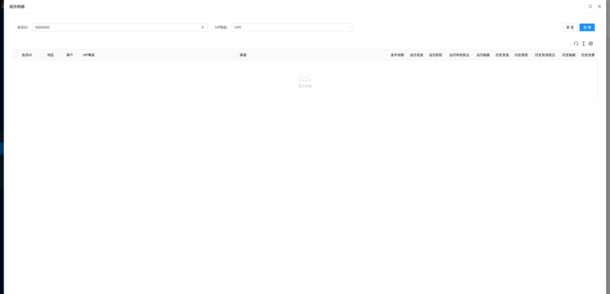

VIP管理查看会员Tab - Bug Tickets
环境：http://site.bx-tytest.xyz；路径：福利中心 / VIP管理 / 查看会员；账号：t0lle01；日期：2026-07-09。
BUG-IND-001：成员明细空数据查询后弹框无法关闭
| 严重级别建议 | P1 / Major。影响测试与运营人员从空数据结果返回列表，必须刷新页面恢复。 |
|---|---|
| 责任判断 | 前端优先。空数据查询已正常展示“暂无数据”，异常集中在成员明细弹框关闭交互；建议 Daniel-前端 优先排查弹框 close 状态、遮罩层、ESC 关闭事件和空数据后组件状态。 |
| 协查人员 | Mario-Java综合、Jerson-Java综合组长。如前端排查发现接口空数据返回结构或状态码导致弹框状态异常，再由后端协查接口返回口径。 |
| 影响范围 | 后台 VIP管理 / 查看会员 / 成员明细弹框；已在 VIP1 成员明细中复现。 |
| 前置条件 | 后台已登录；进入福利中心 / VIP管理 / 查看会员；存在成员数量大于 0 的等级。 |
| 复现步骤 |
|
| 期望结果 | 成员明细弹框关闭，页面返回查看会员列表，查看会员 tab 和列表状态正常保留。 |
| 实际结果 | 弹框未关闭；关闭按钮点击、坐标点击关闭按钮、ESC 均无效，页面仍显示成员明细空数据弹框。只能通过刷新页面恢复。 |
| 证据 |
 |
| 回归建议 | 修复后回归 BR-06 与 BR-07：空数据查询显示正常；关闭按钮与 ESC 均可关闭弹框；关闭后仍停留在查看会员 tab，列表可继续点击大于 0 与 0 数量行。 |
| 残余不确定性 | 本轮仅在 UAT 后台账号 t0lle01、VIP1 成员明细、会员ID空数据查询场景确认复现；未覆盖其他 VIP 等级、其他筛选字段组合、其他后台角色/站点权限。成员数量准确性仅做页面内一致性核对，未做数据库或接口口径校验。 |